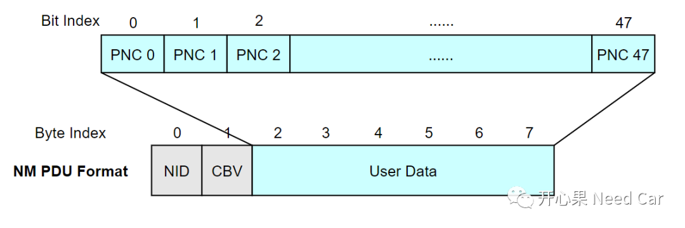
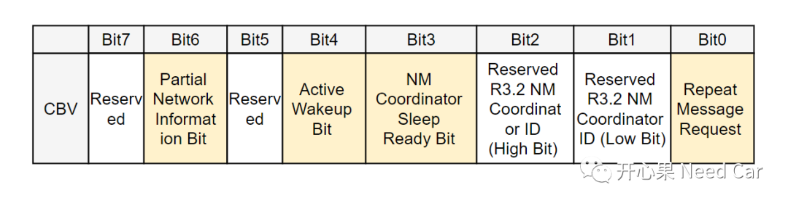
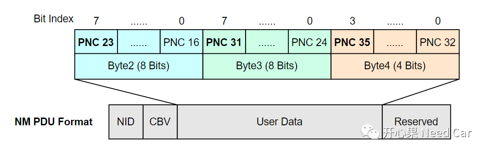
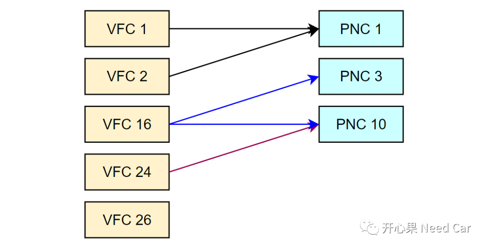
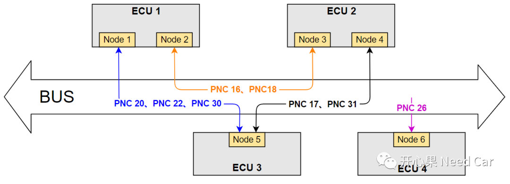
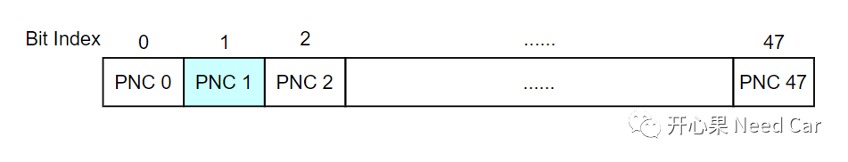
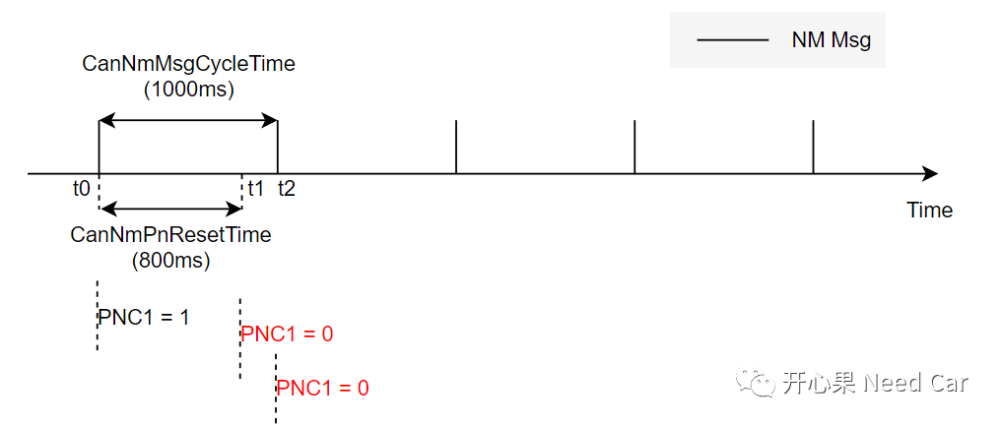
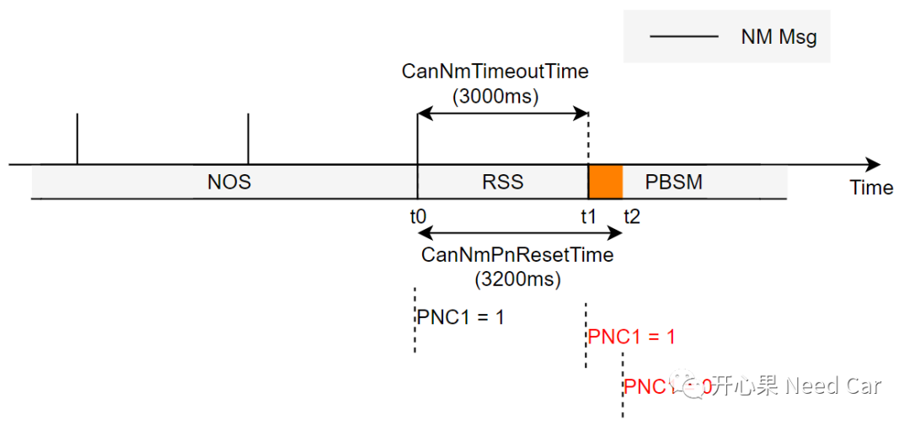
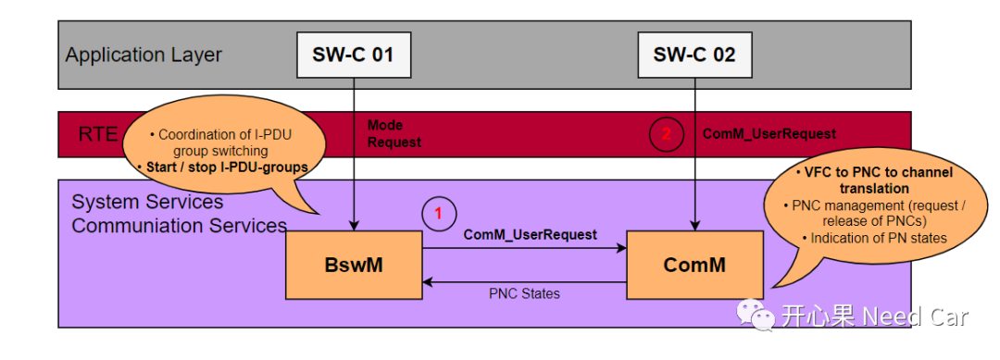

开心果 Need Car · 2022-07-06T18:49:00+08:00 · 微信原文
学习Autosar网络管理，有很多的细枝末节需要理解，而这些细枝末节的东西需要时间琢磨。对于新进的学习者，不知道是否有过这样的感受：“这个概念查不到，这个东西在哪些场景下使用......”，这是我曾经的感受。说实话，理解不了一些概念很难受，概念不清就不能很好地理解对应模块功能，解决实际项目问题自然也就摸不着头脑。本文分享一点Autosar网络功能PN（Partial Network）部分的概念，希望能给大家一些帮助！我是一个Autosar/嵌入式学徒，不明白的很多，欢迎大家指正和交流。
提示：基于CAN总线讨论
1、NM PDU结构及PNC信息位置
一个经典CAN NM PDU格式如下所示：

CBV：Control Bit Vector，控制位向量。具体每个Bit信息如下所示：


2、如何理解VFC？

一个VFC也可以不映射PNC。
3、如何理解节点关联PNC？
一个网段内有多个节点，多个节点之间可以形成多个PNC，也就意味着：具体到某个节点，并不是所有的PNC #n都对该节点有效。比如：ECU1有两个节点Node1和Node2，Node1收到的网络管理报文中，只关注PNC20、PNC22、PNC30是否置位（ = 1），因为Node1只参与PNC 20、PNC22、PNC30三个网络簇，并不关心PNC16或者其他的PNC #n状态，示例如下所示：

4、CanNmPnResetTime时间参数

如果节点的NM Msg发送周期CanNmMsgCycleTime = 1000ms，CanNmPnResetTime = 800ms。
t0时刻，PNC1置位（PNC1 = 1），即：期望本节点，下一帧NM PDU中的PNC1 = 1，关联的Tx I-PDU继续发送；
t1时刻，由于CanNmPnResetTime = 0，导致PNC1复位（PNC1 = 0），关联的Tx I-PDU停发;
t2时刻，发送NM PDU中的PNC1 = 0，而不是预期的PNC1 = 1，所以CanNmMsgCycleTime需要小于CanNmPnResetTime。如下所示：

二、为什么CanNmPnResetTime ＜CanNmTimeoutTime ？
如果节点的NM Msg发送周期CanNmTimeoutTime= 3000ms，CanNmPnResetTime = 3200ms。
t0时刻，由NOS进入RSS之前，最后一帧NM PDU中的PNC1置位（PNC1 = 1），在RSS中停发NM PDU；
t1时刻，由于CanNmPnResetTime != 0，PNC1 = 1，CanNmTimeoutTime = 0，节点由RSS进入PBSM状态；
t2时刻，CanNmPnResetTime = 0，PNC1 = 0。但是，在t1~t2时间内，由于PNC1 = 1，关联PNC1的Tx I-PDU继续外发，进入PBSM以后，除了底层硬件缓存的应用报文可以外发，上层请求的应用报文(Tx I-PDU)不应发送。所以CanNmPnResetTime 需要小于CanNmTimeoutTime 。如下所示：

5、ERA和EIRA是什么？

6、如何理解网络管理报文的"快/慢"发送
对于主动(Active)网络节点，网络管理的需求中可能会有这样的需求："支持快发模式（Immediate），进入RMS（Repeat Message State）状态，需要连续发送NM Msg 10帧，NM Msg间隔20ms，快发模式之后，进入正常发送模式，NM Msg发送间隔1000ms。”
何时快发，何时慢发呢？如果节点网络被动唤醒，比如：节点接收到其他节点的有效网络管理报文，调用CanNm_PassiveStartUp()接口唤醒节点网络，节点的NM Msg正常发送（假设周期1000ms），这就是慢发送；如果节点网络主动唤醒，节点主动请求网络，比如：调用CanNm_NetworkRequest()接口唤醒网络，进入RMS以后，进入快发模式（注意：CanNmImmediateNmTransmissions＞0），假设快发周期20ms，快发10帧，之后进入慢发（假设周期1000ms）。
具体的NM Msg发送行为可以参考前文Autosar网络管理：网络管理报文的收/发与网络管理时间配置参数解析。
往期精彩回顾